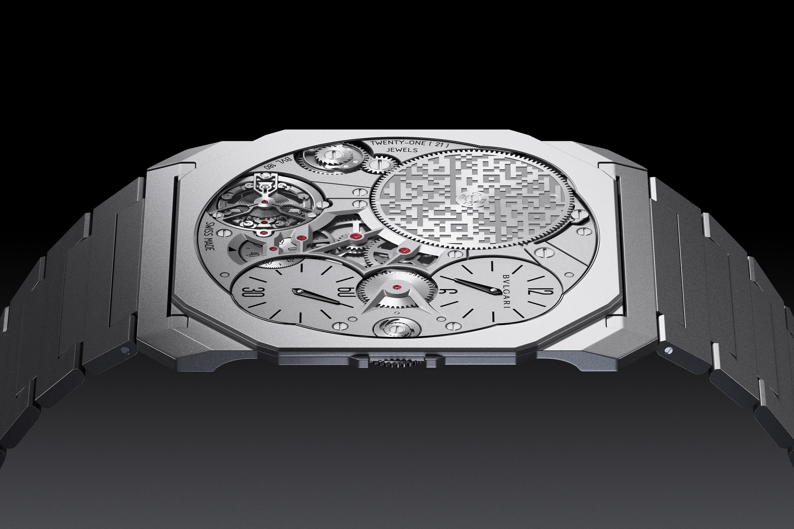
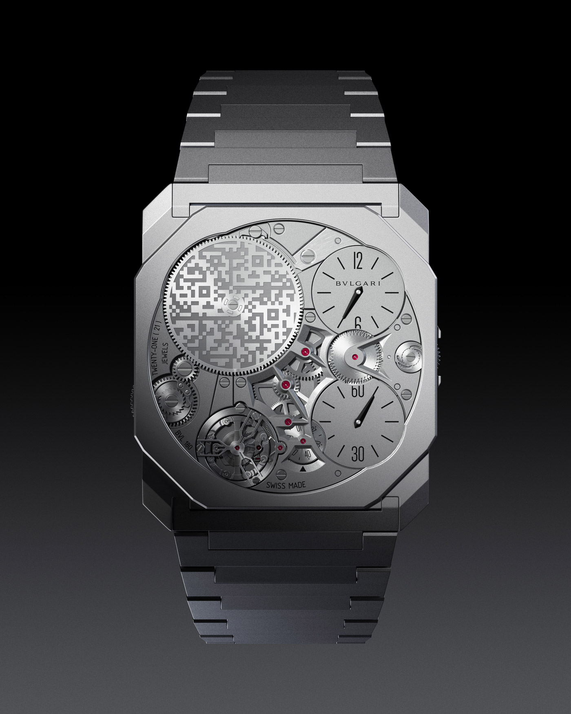
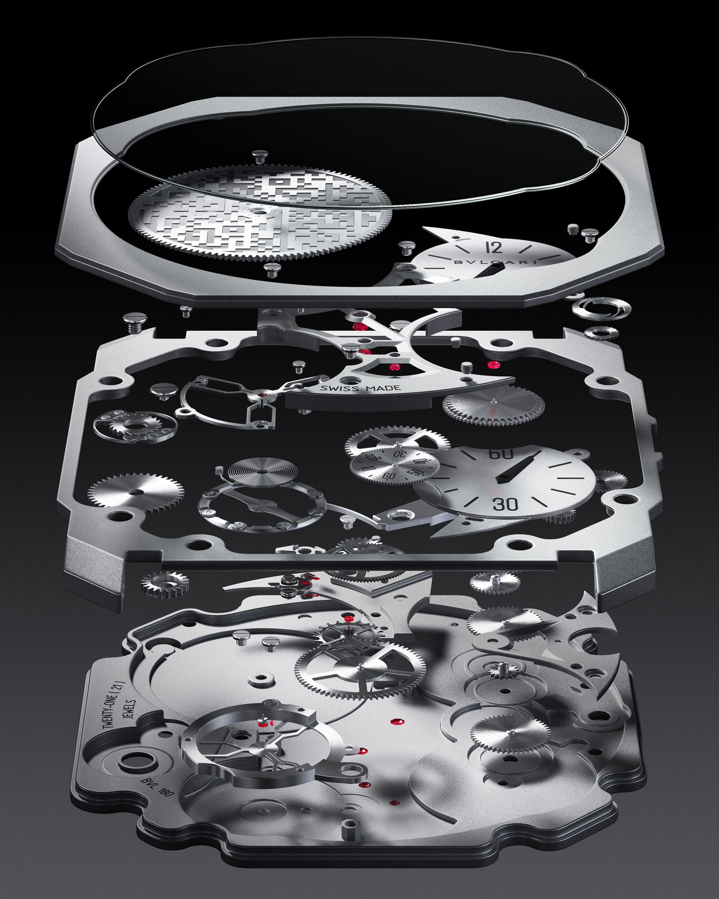
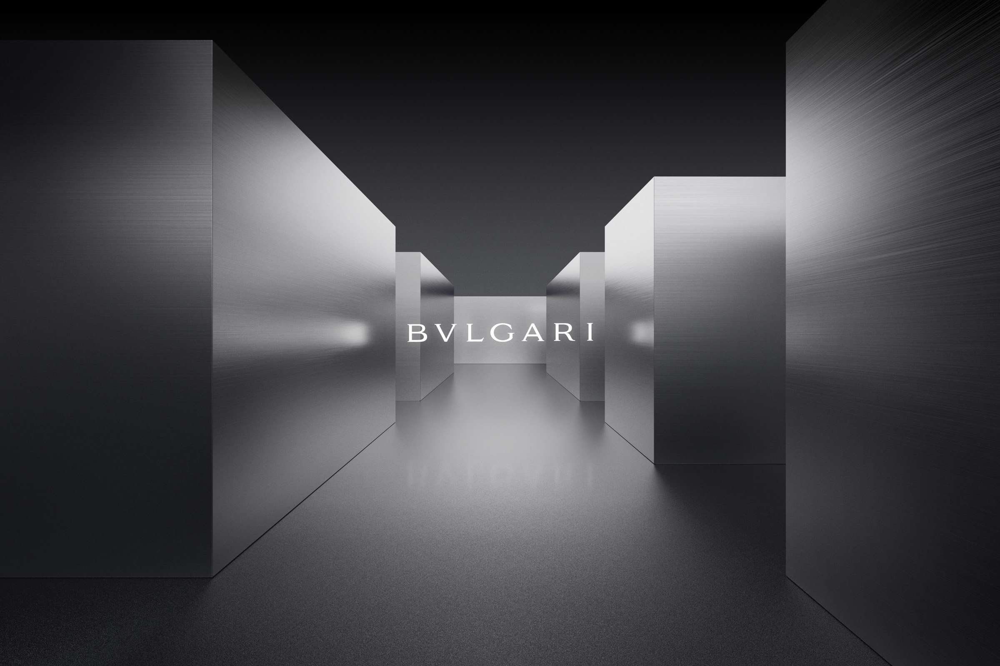

Bvlgari, Octo Finissimo Ultra
As one of the thinnest watches ever made, the Octo Finissimo Ultra boasts a sleek, minimalist design that elevates both form and function. Apart from being strikingly thin, another intriguing aspect in the watch is the QR code engraved on its upper left cog, which links to an unique NFT associated with the timepiece.
Inspired by the design and features of the Octo Finissimo Ultra, the seamless 3D animation captures and expands the essence of this watch, with a special focus on its thinness, materiality and extremely intricate manufacturing. The video showcases the watch along with abstract reinterpretations, visualizing the immersive quality of the associated NFT by transforming the QR code into a maze.
- Client: Bvlgari
- Year: 2023
- Creative Direction: Palam
- CGI and Motion: Pedro Veneziano
- Modelling: Konstantin Datz
- Cut: Nina Lacin
- Sound: Ronas Bektas